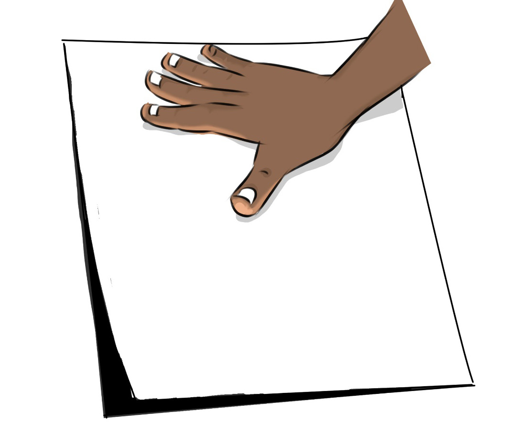

Image pressing: After you have completed drawing the image of the design, carefully place a sheet of paper on top of the inked plate. Gently press the paper onto the plate, making sure the entire surface comes into contact with the ink. Figure 4.8 shows the image-pressing process on the inked plate.

Revealing the print: Peel the paper off the plate to reveal the monoprint. You will see a mirror image of the image you created on the plate. Each monoprint will be unique because variations in ink application, pressure, and image creation ensure that no two prints are the same. Monoprinting is a simple and enjoyable printmaking technique that allows the artist to create unique and spontaneous artworks. Figure 4.9 shows the print revealing process from the drawn inked plate.